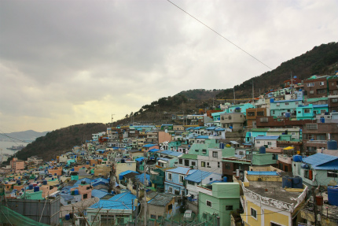
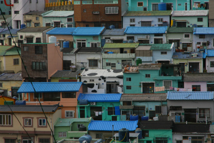

釜山珍寺大作戦、お次は甘川洞（カムチョンドン）という場所に向かう。
ココは釜山市街の西に位置し、山と山に挟まれた谷筋の超傾斜地。
ちなみに「洞」とは町を意味するので日本風にいえば甘川町、といったニュアンスになろう。
本当に車で登って大丈夫なのか？というレベルの急な坂道をグイグイ登った先に甘川洞はある。
向こうの山の上に釜山のランドマークである忠魂塔が建っているのが見える

朝鮮戦争下、戦火を逃れて釜山に逃げて来た4000人以上の人達がこの地に住み着いたのだという。
元々居住には適さない傾斜地に大量に人が住んでいるため、こぼれ落ちてきそうなほど住居がひしめいている。
その後、とある団体が住民に家を派手にペイントすることを推奨したら、とんでもないことになってしまった、という町なのだ。
そんな甘川洞を散策してみた。
長崎や尾道のように、傾斜地独特の入り組んだ建物と狭い道路によって景観が形成されている。
このように車が通れる道はほとんどない。
ここはそんな甘川洞のメインストリート。
この一画では甘川洞の景観を新しい観光資源として売り出そう、という町おこし的アートプロジェクトが行われている。
大規模な壁画が描かれていたり、ストリートオブジェが設置されていたり。
ギャラリーやアートショップも併設されており、アーティーな若者のお越しをお待ちしている。
ただ、どうも町おこし的アートイベントって何かヌルくないすか？
当たり障りのない作品並べてアート様が下々のところに降りてきてあげましたよー、的な目線の美術が幅を利かせているような気がしてならない。
↓こんな軍手とか
↓こんなオバチャンとか。

…の方が方がよっぽどエキサイティングだと思うんですけど。
メインストリートから一歩小道を入ればそこは生活感あふれまくりのリアリズムの町。
そんな路地を抜けると目の前にとんでもない風景が広がっていた。
どーですか、お客さん。
これが甘川洞の全景だ。
まるで中南米のような派手なペイントの家々。
それらが急傾斜地に貼り付くように、重なるように、モッシュするように、互いを牽制するように、それでいて溶け合うように、それぞれの生活を主張している。
俺はここに居るぞ！
俺は生きているぞ！
という叫びが一軒一軒の家から聞こえてきそうだ。
単に綺麗なだけじゃない。かといってリアルなだけじゃない。
この土地の持つ歴史的な意味をも含めて圧倒される眺めだ。

↑左端にチラッと海が見える。甘川港の辺りだろう。
一軒一軒は決して暮らし向きの良い家ではない。
しかしそれらが集まって驚愕の光景を作り上げているのだ。
傾斜地だけにみな屋上に水タンクを備えている。
そのタンクだけが青一色で妙な統一感があった。
中には何度も重ね塗りして家とは思えないこってりしたマチエールを醸し出している家や…
牛柄の家まで。

そんな歴史と風土と地形と現状が複雑に入り組んだ結果、出来上がった光景なのだ。
一方、この甘川洞の周辺にも同じような坂の街が。
色は地味だが、やはり傾斜地特有の不思議な町並みが形成されている。
この建物の水の溜め具合ったら…
釜山珍寺大作戦